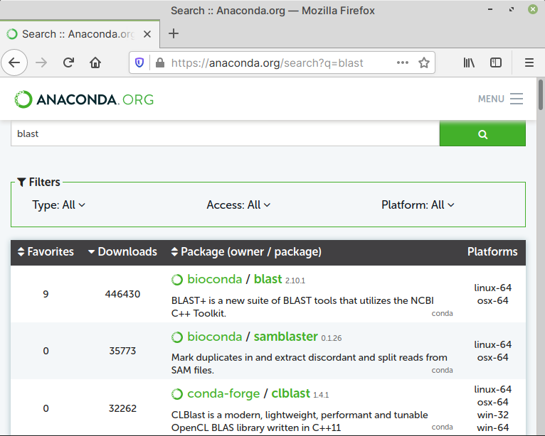

3.5.3. Using Conda¶
In this short guide on using Conda, I will show you how to:
Create an environment
Activate the environment
Search, install and use packages — using the NCBI BLAST+ program as an example
Remove an environment when you no longer need it
Note
A cheat sheet with commonly used commands for working with Conda is available from the project’s website.
Creating an environment¶
To create an environment, use the
conda create command with the -n option, followed by
a name for the environment — blast in this example:
conda create -n blast
Activating an environment¶
You can get a list of all environments using the command:
conda envs list
To activate an environment, use the conda activate
command with the name of the environment:
conda activate blast
Searching, installing and using Packages¶
To search and install packages:
First, activate the environment, if you haven’t done so already.
To demonstrate, I will activate the
blastenvironment created earlier:conda activate blast
To search for packages, open Anaconda.org in a browser.
Type your search term in the Search Packages field and press the ENTER key (Fig. 65).
 Fig. 65 Searching for a package on Anaconda.org¶
Alternatively, you can use the
conda searchcommand:conda search blast
This will output matching packages:
Loading channels: done # Name Version Build Channel blast 2.2.31 1 bioconda ... blast 2.9.0 pl526he19e7b1_7 bioconda ... blast 2.10.1 pl526he19e7b1_2 bioconda
To install the package, use the
conda installcommand with the name and version number of the package.Attention
You will need to use the highest version number of the program, obtained from search results. Otherwise, an older version might get installed.
conda install blast==2.10.1
Once installed, you can start using programs included with the package, for example:
(blast) user@cookbook:~$ blastn -version
Output:
blastn: 2.10.1+ Package: blast 2.10.1, build Oct 14 2020 11:36:30
Deactivating an environment¶
When your work is complete, you can deactivate an environment. To do so, use the command:
conda deactivate
Your shell prompt will change to its default state i.e.,
without the name of the Conda environment — (blast) in
this case.
Removing an environment¶
To remove an environment, when you no longer need it, use the command:
conda remove -n blast --all
Here -n is used to indicate the name of environment
you would like to remove and --all removes all packages
installed in that environment.